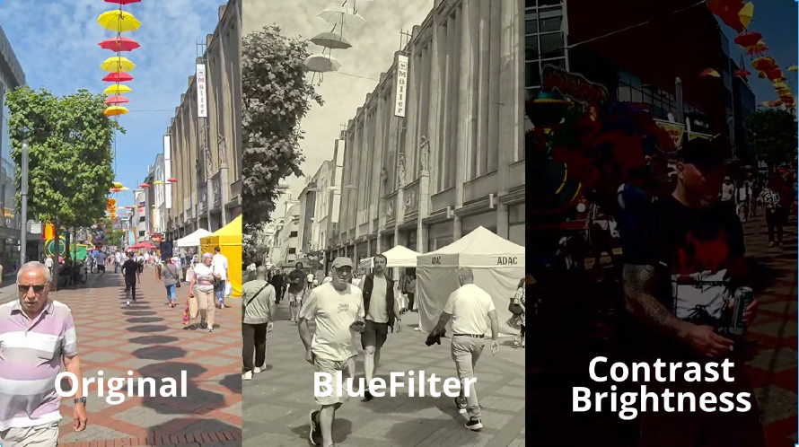
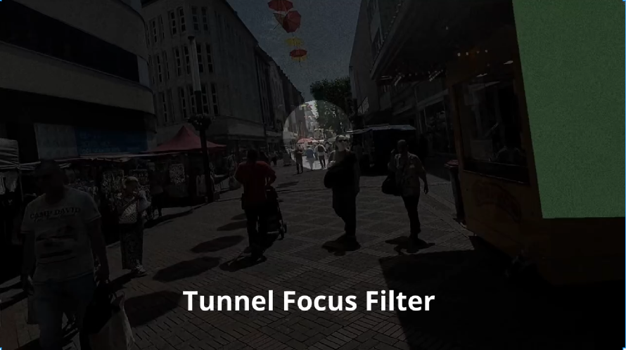
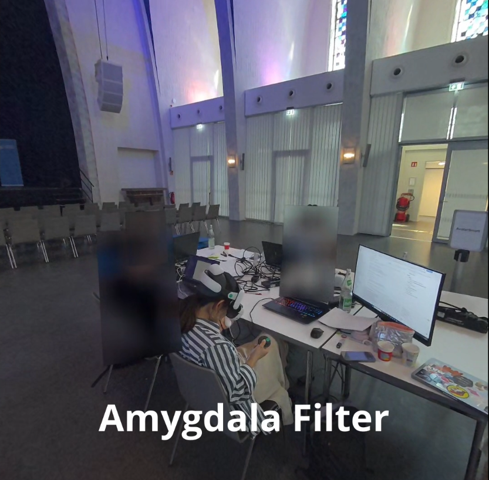
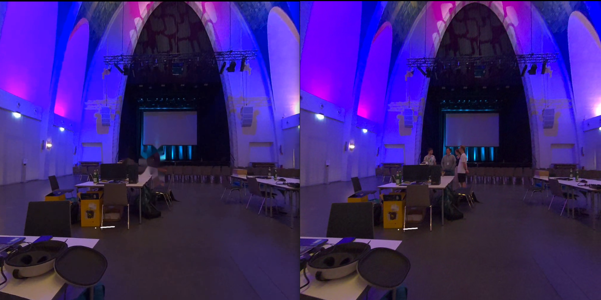

FocusProVision
🏆 First Place, Empower XR Hackathon, Germany
3-day Hackathon · Germany · XR + Computer Vision
XR
Computer Vision
Roboflow
Human Detection
Accessibility
Neurodivergent
Unity
Overview
- 3-day hackathon at Empower XR in Germany. Our team built FocusProVision, an XR sensory filter designed to make the real world calmer and easier to navigate for neurodivergent people.
- FocusProVision targets people with autism, ADHD, high sensitivity, or social anxiety: people who can feel overwhelmed by strong visual stimuli, busy environments, or unpredictable social situations.
- Won First Place out of all competing teams.

The team at Empower XR, Germany.
1) The Idea
- XR passthrough headsets let you see the real world through a camera. FocusProVision sits between that camera feed and the user's eyes, applying real-time filters to soften the sensory experience.
- The goal: let the user stay present in the physical world while reducing the elements that cause overload, without isolating them from their environment.
2) What FocusProVision Can Do
- Visual softening: reduce brightness, contrast, and saturated colors in the passthrough feed, turning a harsh, overstimulating scene into something muted and manageable.

Passthrough scene with brightness, contrast, and color intensity reduced.
- Tunnel focus mode: vignette the edges of the view to block out peripheral distractions and direct attention to what matters in front of the user.

Tunnel focus mode: peripheral view darkened to reduce distraction.
- People blurring: detect all humans in the scene in real time and blur them, reducing visual and social overload in crowded spaces, while keeping the person the user is currently talking to unblurred.

Real-time human detection: bystanders blurred, conversation partner kept clear.
3) Computer Vision: My Contribution
- Responsible for the entire people-detection pipeline, built within the 3-day window.
- Training: trained a human detection model on Roboflow, fine-tuned for real-world, indoor environments from a headset's passthrough camera perspective.
- Deployment: integrated the model into the XR app via the Roboflow API, running inference in real time on the headset camera feed.
- Blurring: for each detected person bounding box, applied a blur filter over that region in the passthrough frame, leaving the rest of the scene intact and keeping the conversation partner fully visible.
4) Future Work: Complete Human Removal
- The next step beyond blurring: completely remove people from the scene and reconstruct the background behind them, so the user sees the environment without any human silhouettes at all.
- This has already been implemented and validated in real time on PC. Integration into the XR headset is the next step, not yet done.

Complete human removal, running in real time on PC. XR integration coming next.
My Contribution
- Trained a human detection model on Roboflow for headset passthrough camera conditions.
- Deployed the model and integrated it into the XR app via the Roboflow API for real-time inference.
- Implemented the per-person blur logic, excluding the active conversation partner from the effect.
- Prototyped full human removal running in real time on PC as the next evolution of the feature.
Tech Stack
XR
Unity
Roboflow
Human Detection
Computer Vision
Passthrough Camera